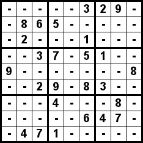
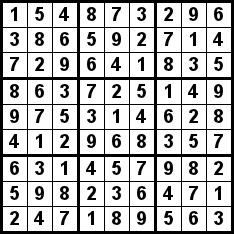

You have a problem that you want to solve by assigning values to data. The values will have some interrelated constraints. You attempt to solve it by assigning all possible values to the first piece of data. When you assign a value, you make a recursive call to solve the rest of the problem. If successful, you're done. However, if solving the rest of the problem is unsuccessful, then you'll be alerted to this fact when the recursive call returns. You then remove the value that you have assigned, and assign the next value.
The example problem that we'll work on is Sudoku. A Sudoku puzzle is a 9x9 grid of numbers between 1 and 9. You are given a grid that is partially filled in, and your job is to fill the rest of the grid in so that:
|  Example Problem |  Example Solution |
#include <vector>
#include <iostream>
using namespace std;
class Sudoku {
public:
Sudoku();
void Print_Screen();
void Print_Convert();
int Solve();
protected:
int Is_Row_Valid(int r);
int Is_Col_Valid(int c);
int Is_Panel_Valid(int sr, int sc);
int Recursive_Solve(int r, int c);
vector <string> Grid;
vector <int> checker;
};
|
Let's define the public methods:
#include <cstdio>
#include <cstdlib>
#include "sudoku.h"
void usage(string s)
{
cerr << "usage: sudoku solve(yes|no) output-type(screen|convert) - puzzle on stdin\n";
if (s != "") cerr << s << endl;
exit(0);
}
main(int argc, char **argv)
{
string solve, output;
Sudoku *sud;
if (argc != 3) usage("");
solve = argv[1];
output = argv[2];
if (solve != "yes" && solve != "no") usage("bad solve");
if (output != "screen" && output != "convert") usage("bad output");
sud = new Sudoku;
if (solve == "yes") {
if (!sud->Solve()) {
printf("Cannot solve puzzle\n");
exit(0);
}
}
if (output == "screen") {
sud->Print_Screen();
} else {
sud->Print_Convert();
}
exit(0);
}
|
We start with sudoku1.cpp, which simply defines dummy implementations for all the methods. It compiles, but doesn't do anything. If you try to "solve" the puzzle, it will say that there is no solution:
UNIX> sudoku1 usage: sudoku solve(yes|no) output-type(screen|convert) - puzzle on stdin UNIX> sudoku1 no screen UNIX> sudoku1 yes convert Cannot solve puzzle UNIX>
#include <cstdio>
#include <cstdlib>
#include "sudoku.h"
Sudoku::Sudoku()
{
int i, j;
char c;
Grid.resize(9);
for (i = 0; i < 9; i++) {
for (j = 0; j < 9; j++) {
if (!(cin >> c)) {
cerr << "Bad Sudoku File -- not enough entries\n";
exit(1);
}
if (c == '-' || (c >= '0' && c <= '9')) {
Grid[i].push_back(c);
} else {
cerr << "Bad Sudoku File -- entry: " << c << endl;
exit(1);
}
}
}
}
void Sudoku::Print_Screen()
{
int i, j;
for (i = 0; i < Grid.size(); i++) {
for (j = 0; j < Grid[i].size(); j++) {
if (j != 0) printf(" ");
printf("%c ", Grid[i][j]);
if (j == 2 || j == 5) printf(" ");
}
printf("\n");
if (i == 2 || i == 5) printf("\n");
}
}
|
I have three example puzzles in example1.txt, example2.txt and example3.txt. The last one is the one pictured above.
I also have some bad input files:
UNIX> make sudoku2 g++ -c -o sudoku2.o sudoku2.cpp g++ -o sudoku2 sudoku_main.o sudoku2.o UNIX> sudoku2 no screen < example1.txt - 6 - 1 - 4 - 5 - - - 8 3 - 5 6 - - 2 - - - - - - - 1 8 - - 4 - 7 - - 6 - - 6 - - - 3 - - 7 - - 9 - 1 - - 4 5 - - - - - - - 2 - - 7 2 - 6 9 - - - 4 - 5 - 8 - 7 - UNIX> sudoku2 no screen < bad1.txt Bad Sudoku File -- entry: x UNIX> sudoku2 no screen < bad2.txt - 6 - 1 - 4 - 5 - - - 8 3 - 5 6 - - 2 - - - - - - - 1 8 - - 4 - 7 - - 6 - - 6 - - - 3 - - 7 - - 9 - 1 - - 7 This is the bad row 5 - - - - - - - 2 - - 7 2 - 6 9 - - - 4 - 5 - 8 - 7 - UNIX>
I could have not put checker into the class, and instead have used a temporary vector. However, this is more efficient. The constructor now checks the input's rows and columns for validity. I only include the code for Is_Row_Valid(). Is_Col_Valid() is similar.
int Sudoku::Is_Row_Valid(int r)
{
int i;
for (i = '0'; i <= '9'; i++) checker[i] = 0;
for (i = 0; i < 9; i++) {
if (Grid[r][i] != '-') {
if (checker[Grid[r][i]]) return 0;
checker[Grid[r][i]] = 1;
}
}
return 1;
}
|
We can now identify that bad2.txt and bad3.txt are indeed bad:
UNIX> make sudoku3 g++ -c -o sudoku3.o sudoku3.cpp g++ -o sudoku3 sudoku_main.o sudoku3.o UNIX> sudoku3 no screen < bad2.txt Bad Sudoku File -- Bad row 5 UNIX> sudoku3 no screen < bad3.txt Bad Sudoku File -- Bad col 6 UNIX>
int Sudoku::Is_Panel_Valid(int sr, int sc)
{
int r, c, i;
for (i = '0'; i <= '9'; i++) checker[i] = 0;
for (r = sr; r < sr+3; r++) {
for (c = sc; c < sc+3; c++) {
if (Grid[r][c] != '-') {
if (checker[Grid[r][c]]) return 0;
checker[Grid[r][c]] = 1;
}
}
}
return 1;
}
|
Now we can identify that bad4.txt is bad:
UNIX> make sudoku4 g++ -c -o sudoku4.o sudoku4.cpp g++ -o sudoku4 sudoku_main.o sudoku4.o UNIX> sudoku4 no screen < bad4.txt Bad Sudoku File -- Bad panel starting at row 6 col 6 UNIX>
int Sudoku::Solve()
{
return Recursive_Solve(0, 0);
}
|
We will go over each part of Recursive_Solve() separately. The first part of it checks successive elements of the grid until it gets to the end of the grid, or it gets to a dash character. If it reaches the end of the grid, then the puzzle is solved, and it returns 1. Those are C-style comments, by the way. I'm an old man.
int Sudoku::Recursive_Solve(int r, int c)
{
int i;
/* Skip all non-dash characters */
while (r < 9 && Grid[r][c] != '-') {
c++;
if (c == 9) {
r++;
c = 0;
}
}
/* Base case -- we're done */
if (r == 9) return 1;
|
Next comes the recursive part. Once we've found a dash, we try to insert each value from '1' to '9'. When we insert a value, we test to see if the value's row, column and panel are valid. If so, then we call the solver recursively. We do that on r and c, because the recursive solver will skip over that element, now that it is no longer a dash. If the recursive solver returns 1, then we have found a solution, and we return one:
/* Try each value. If successful, then return true. */
for (i = '1'; i <= '9'; i++) {
Grid[r][c] = i;
if (Is_Row_Valid(r) &&
Is_Col_Valid(c) &&
Is_Panel_Valid(r-r%3, c-c%3) &&
Recursive_Solve(r, c)) {
return 1;
}
}
|
If we fall out of the for loop, that means that there was no solution. Therefore, we reset the element to a dash, and return 0. That way, the calling function can try another value and continue. If r and c are zero, the calling function is Solve(), and it will return that there is no solution to the puzzle:
/* If unsuccessful, reset the element and return false. */ Grid[r][c] = '-'; return 0; } |
See how recursion makes this complex process of trying and backtracking so simple? There is no explicit backtracking really -- the important part is that if the recursive solver fails, it restores the state of the grid to the state when it was called, so that the caller can try something new.
When we run this, it solves the puzzles:
UNIX> sudoku5 yes screen < example1.txt 9 6 3 1 7 4 2 5 8 1 7 8 3 2 5 6 4 9 2 5 4 6 8 9 7 3 1 8 2 1 4 3 7 5 9 6 4 9 6 8 5 2 3 1 7 7 3 5 9 6 1 8 2 4 5 8 9 7 1 3 4 6 2 3 1 7 2 4 6 9 8 5 6 4 2 5 9 8 1 7 3 UNIX> sudoku5 yes screen < example2.txt 4 3 6 7 2 8 5 1 9 9 2 5 3 1 4 6 7 8 1 7 8 5 9 6 2 3 4 8 6 9 1 5 7 3 4 2 3 5 2 6 4 9 1 8 7 7 4 1 2 8 3 9 5 6 6 1 4 8 3 2 7 9 5 5 8 7 9 6 1 4 2 3 2 9 3 4 7 5 8 6 1 UNIX> sudoku5 yes screen < example3.txt 1 3 7 8 9 4 6 5 2 5 8 2 6 7 1 3 9 4 4 6 9 3 5 2 1 8 7 8 5 6 7 3 9 4 2 1 7 9 4 2 1 6 5 3 8 3 2 1 5 4 8 7 6 9 2 7 8 1 6 3 9 4 5 9 1 3 4 2 5 8 7 6 6 4 5 9 8 7 2 1 3 UNIX>It's pretty quick too. It may be disappointing to you that a program so simple can solve Sudoku problems so quickly. If you really wanted it to be fast, or if you wanted to solve larger puzzles, you would probably have to put some more smarts into the program. However, for puzzles of this size, the simple recursive solution works very well.
UNIX> make sudoku g++ -c -o sudoku_main.o sudoku_main.cpp g++ -c -o sudoku.o sudoku.cpp g++ -o sudoku sudoku_main.o sudoku.o UNIX> sudoku no convert < example3.txt | head convert -size 234x234 xc:Black \ -background White -fill Black \ \( -size 24x24 -gravity Center label:- \) -geometry 24x24+3+3 -gravity NorthWest -composite \ \( -size 24x24 -gravity Center label:- \) -geometry 24x24+3+28 -gravity NorthWest -composite \ \( -size 24x24 -gravity Center label:- \) -geometry 24x24+3+53 -gravity NorthWest -composite \ \( -size 24x24 -gravity Center label:- \) -geometry 24x24+3+80 -gravity NorthWest -composite \ \( -size 24x24 -gravity Center label:9 \) -geometry 24x24+3+105 -gravity NorthWest -composite \ \( -size 24x24 -gravity Center label:- \) -geometry 24x24+3+130 -gravity NorthWest -composite \ \( -size 24x24 -gravity Center label:- \) -geometry 24x24+3+157 -gravity NorthWest -composite \ \( -size 24x24 -gravity Center label:- \) -geometry 24x24+3+182 -gravity NorthWest -composite \ UNIX> sudoku no convert < example3.txt | sh UNIX> mv Sudoku.jpg example3-problem.jpg UNIX> sudoku yes convert < example3.txt | sh UNIX> mv Sudoku.jpg example3-solution.jpg UNIX>I won't explain convert. However, the mechanics of Print_Convert() are not that bad. I create a big black square, and then I plot white squares with the contents of each cell printed as labels. I use the following variables:
void Sudoku::Print_Convert()
{
int PPS = 24;
int Border = 3;
int CW = 1;
int PW = 2;
int i, j, x, y;
printf("convert -size %dx%d xc:Black \\\n", PPS*9+Border*2+CW*8+PW*2, PPS*9+Border*2+CW*8+PW*2);
printf(" -background White -fill Black \\\n");
x = Border;
for (i = 0; i < 9; i++) {
y = Border;
for (j = 0; j < 9; j++) {
printf("\\( -size %dx%d -gravity Center label:%c \\)", PPS, PPS, Grid[i][j]);
printf(" -geometry %dx%d+%d+%d -gravity NorthWest -composite \\\n", PPS, PPS, x, y);
y += (PPS+CW);
if (j == 2 || j == 5) y += PW;
}
x += (PPS+CW);
if (i == 2 || i == 5) x += PW;
}
printf(" Sudoku.jpg\n");
}
|
If you like messing with pictures, I recommend convert, as it is a super-powerful program. Of course, it's beyond the scope of this class. I just include this code in case it interests you.
{kind=link}
{kind=link}